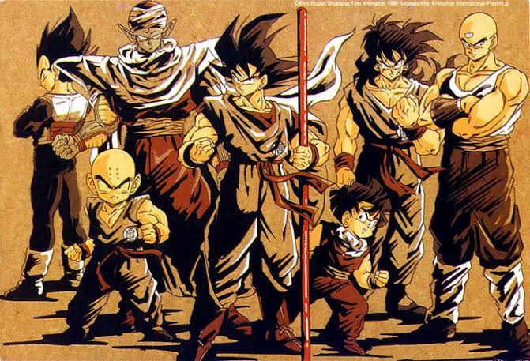
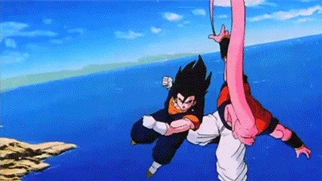
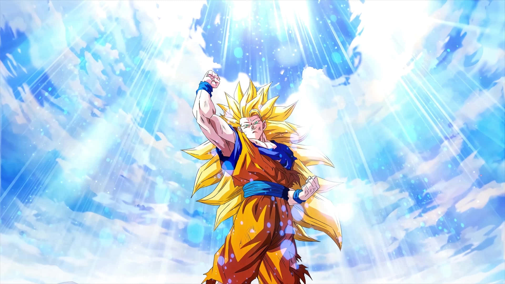

Dragon Ball Z, criado por Akira Toriyama, é uma das obras mais influentes da história dos animes e mangás, tendo moldado o gênero shonen e se tornado um fenômeno da cultura pop mundial nas décadas de 1990 e 2000. A trama acompanha a vida adulta do guerreiro Saiyajin Goku que, ao lado de seus aliados — os Guerreiros Z —, defende a Terra contra ameaças de escala cósmica. Dividida em arcos emblemáticos como as sagas dos Saiyajins, de Freeza, de Cell e de Majin Boo, a série conquistou gerações ao misturar artes marciais, ficção científica e uma narrativa repleta de superação e drama.
O grande trunfo da animação está na sua capacidade de criar momentos inesquecíveis que se fixaram na memória coletiva dos fãs, como a lendária primeira transformação de Goku em Super Saiyajin na batalha contra Freeza. Além das lutas intensas e do ritmo eletrizante embalado por trilhas sonoras marcantes, Dragon Ball Z destaca-se pelo desenvolvimento de seus personagens, transformando antigos vilões, como Piccolo e Vegeta, em heróis complexos e fundamentais. O legado do anime permanece vivo até hoje, servindo de inspiração para inúmeras obras modernas e mantendo uma legião de fãs fervorosos ao redor do mundo.


